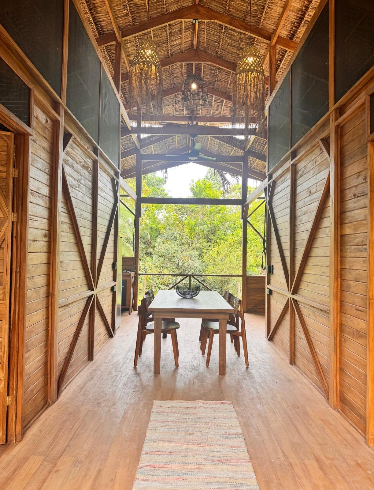
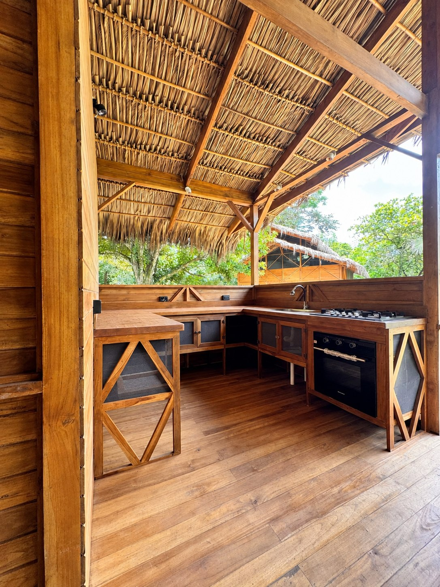
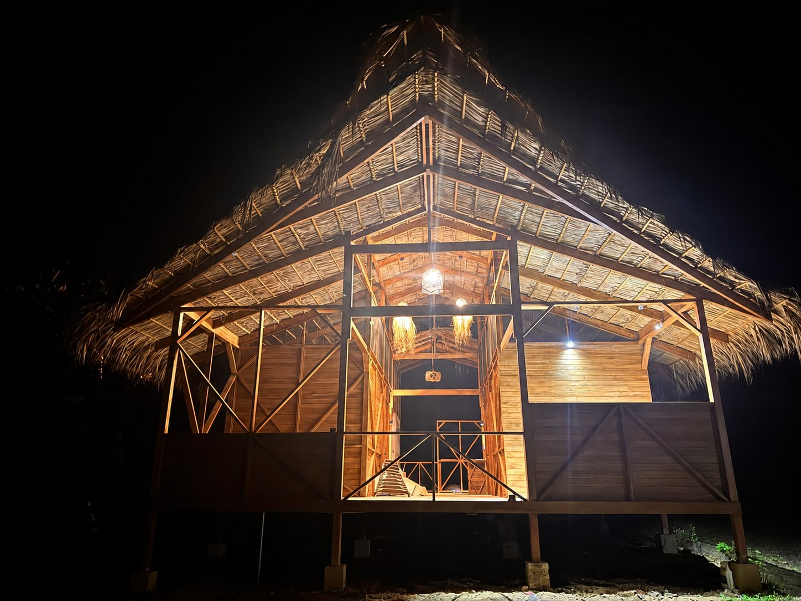
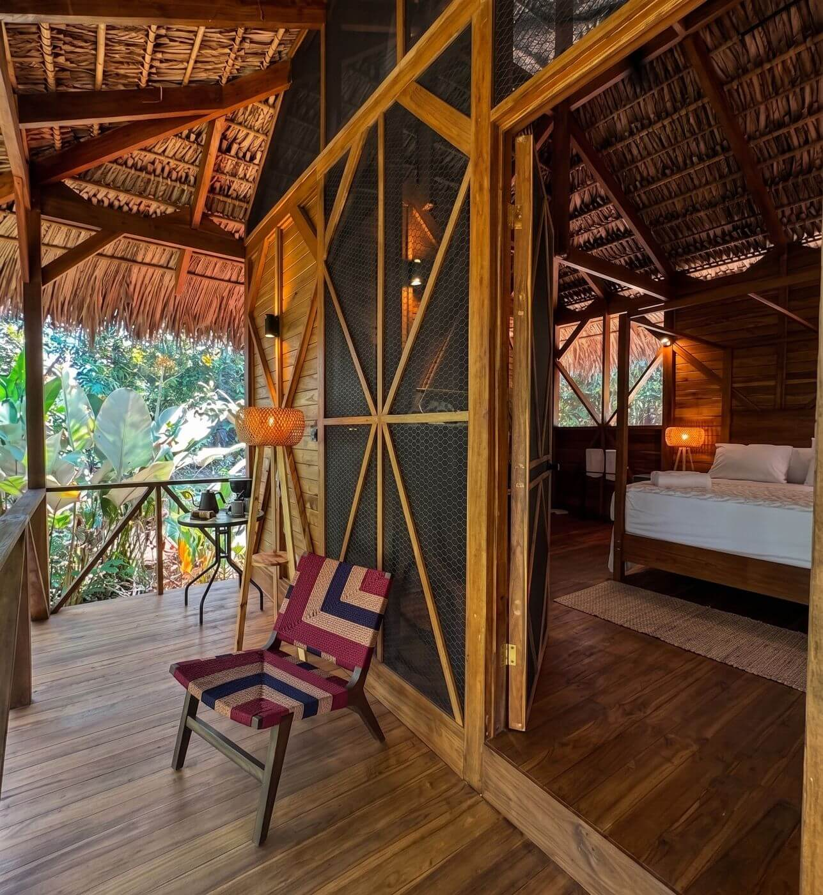
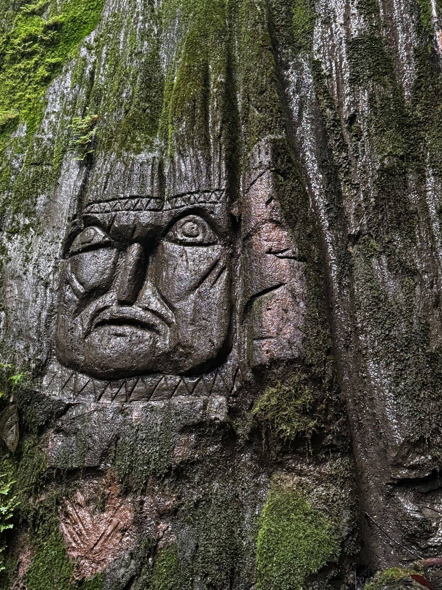
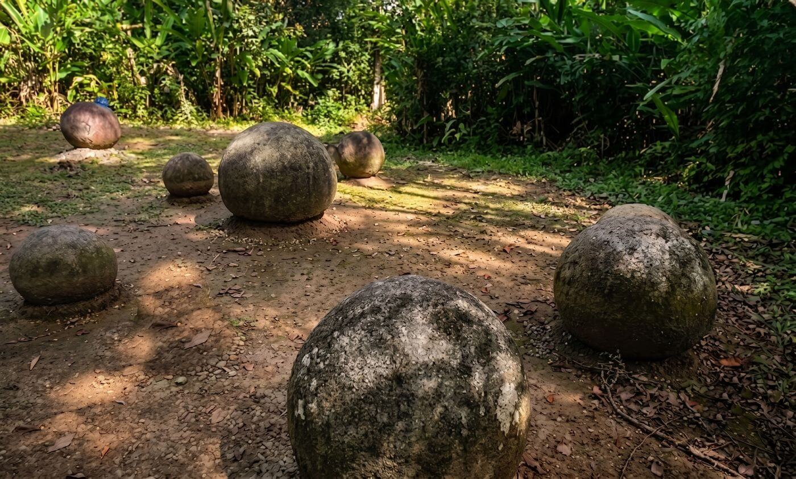
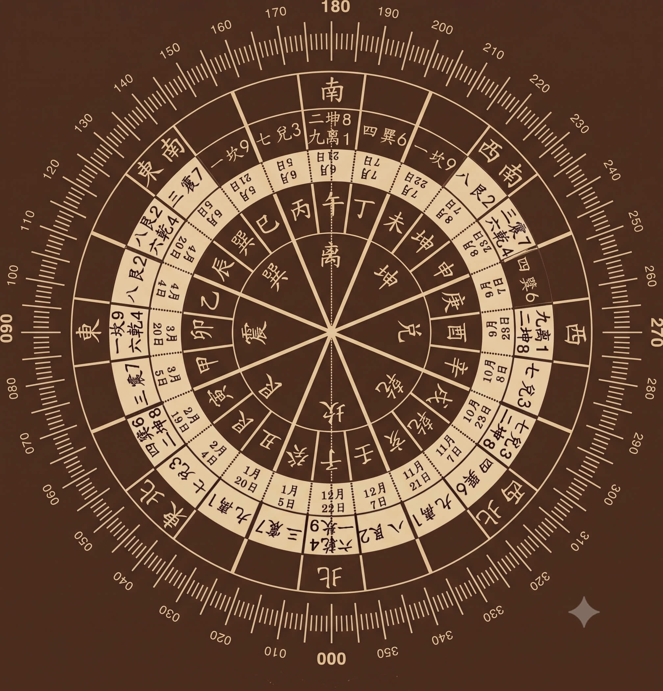
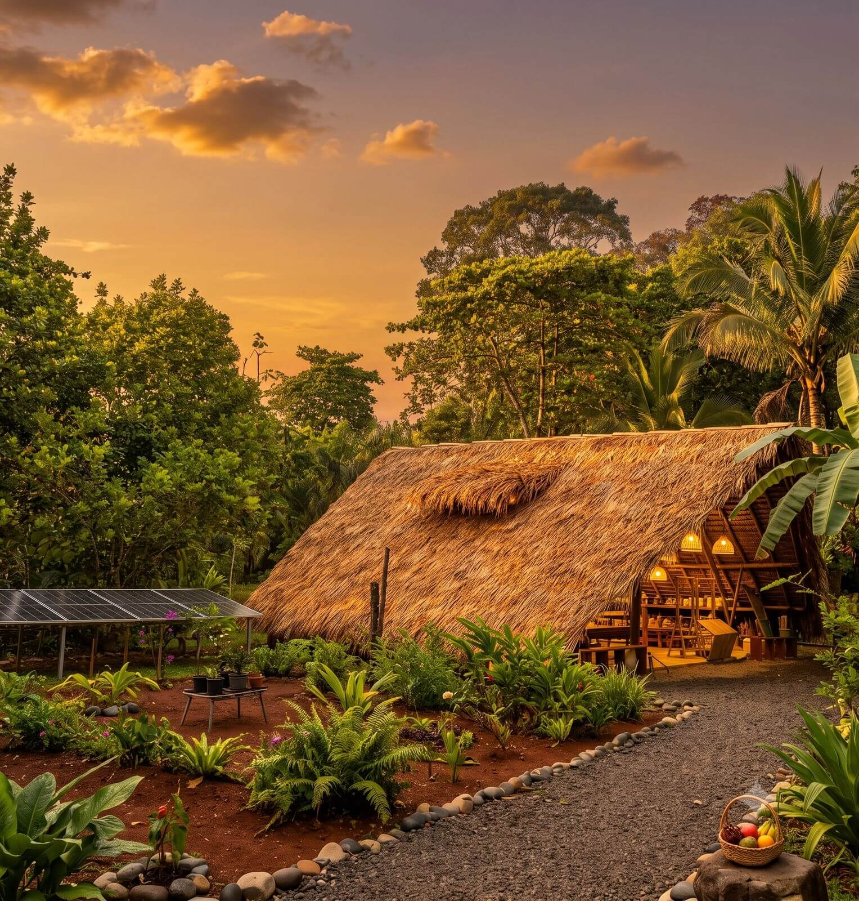
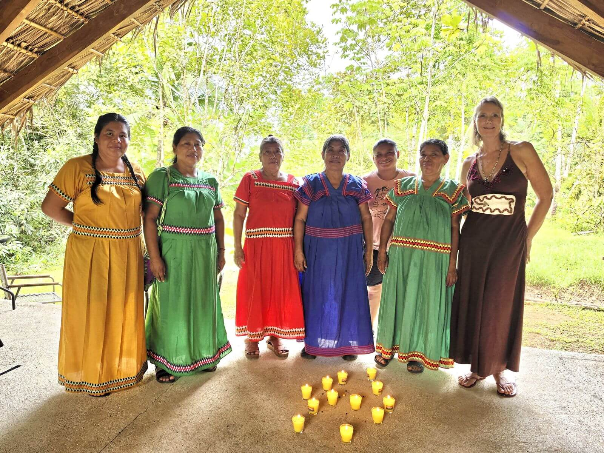

Galería
Tierra Santa — La Tierra & La Comunidad


Una mirada más de cerca a Tierra Santa Reconnect — las villas, el santuario, la academia y la selva que lo envuelve todo. Haz clic en cualquier foto para verla en tamaño completo.












La reserva en tiempo real está en camino. Por ahora, escríbenos con tus fechas y confirmaremos la disponibilidad directamente.
hola@tierrasantalodge.comLos huéspedes en Costa Rica también pueden pagar directamente por SINPE Móvil: 8792 7611.